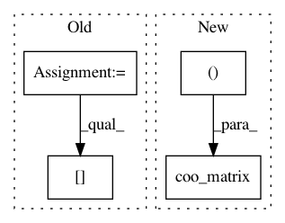

a7ff52f2e7c84b8e5c3f110dbee792f1962f526b,scipy/sparse/data.py,_minmax_mixin,_min_or_max_axis,#_minmax_mixin#Any#Any#,106
Before Change
major_index, value = mat._minor_reduce(min_or_max)
min_or_max(value, 0, out=value)
out = np.zeros(len(mat.indptr) - 1, dtype=self.dtype)
out[major_index] = value
out = np.asmatrix(out)
if axis == 1:
out = out.T
After Change
return coo_matrix((value, (np.zeros(len(value)), major_index)),
dtype=self.dtype, shape=(1, M))
else:
return coo_matrix((value, (major_index, np.zeros(len(value)))),
dtype=self.dtype, shape=(M, 1))
def _min_or_max(self, axis, min_or_max):
if axis is None:
if 0 in self.shape:
In pattern: SUPERPATTERN
Frequency: 3
Non-data size: 4
Instances
Project Name: scipy/scipy
Commit Name: a7ff52f2e7c84b8e5c3f110dbee792f1962f526b
Time: 2014-01-28
Author: joel.nothman@gmail.com
File Name: scipy/sparse/data.py
Class Name: _minmax_mixin
Method Name: _min_or_max_axis
Project Name: epfl-lts2/pygsp
Commit Name: 704174e94846fecfb5162c56d3305057fc4ba734
Time: 2015-09-07
Author: lionel.martin@epfl.ch
File Name: pygsp/graphs/community.py
Class Name: Community
Method Name: __init__
Project Name: scipy/scipy
Commit Name: 94d9d4926733106364222d4e76ff05f8d2329623
Time: 2012-07-16
Author: vanderplas@astro.washington.edu
File Name: scipy/sparse/csgraph/_laplacian.py
Class Name:
Method Name: _laplacian_sparse